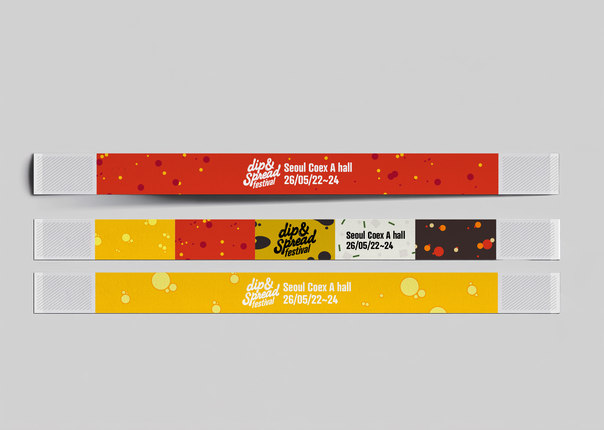
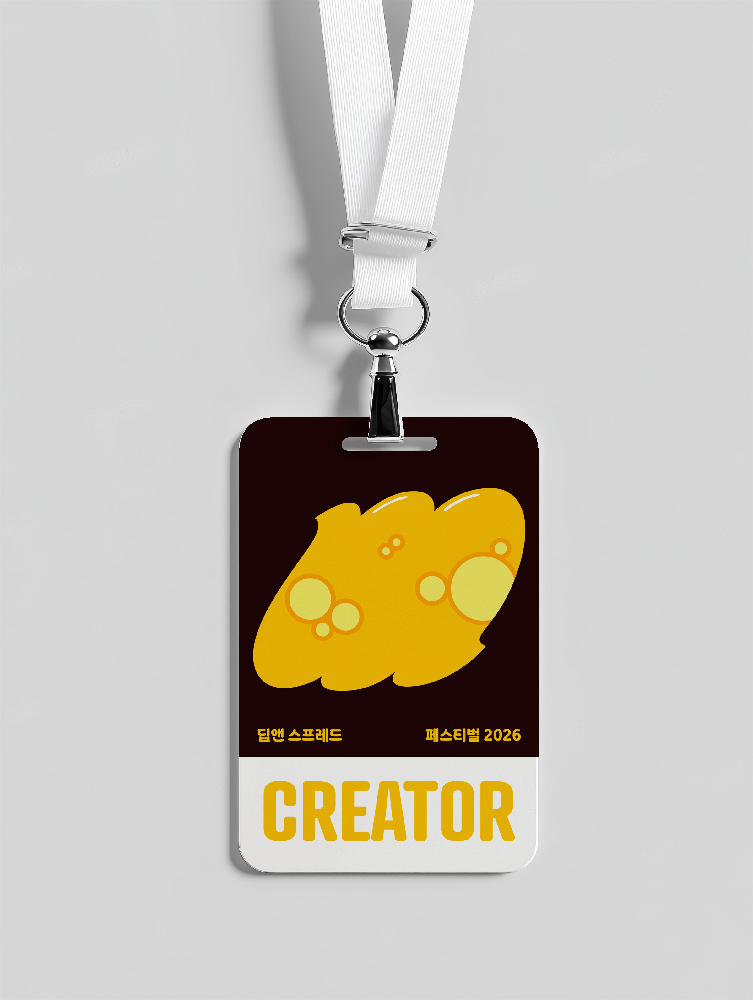
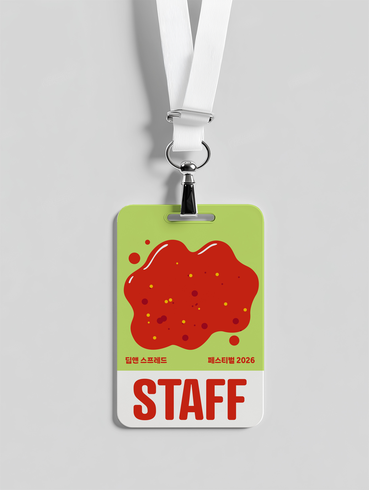
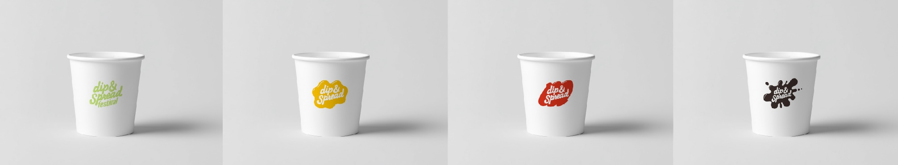
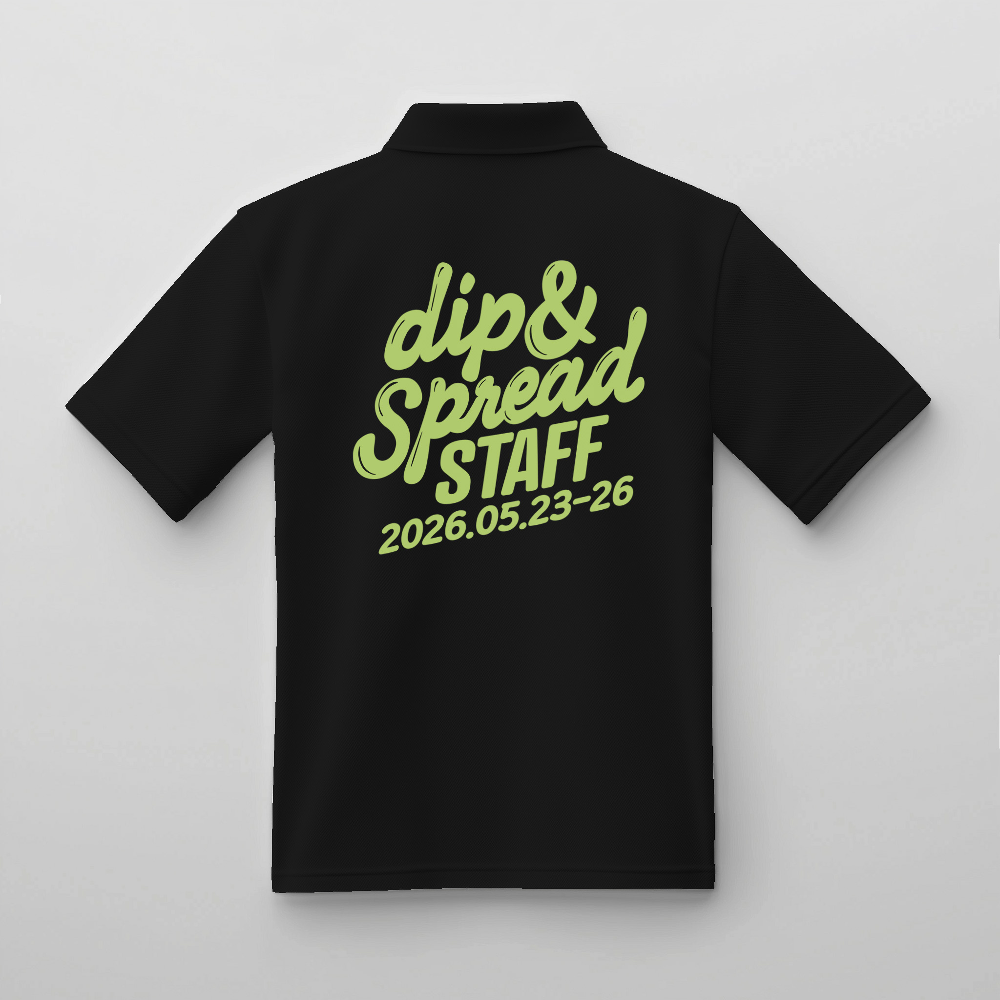
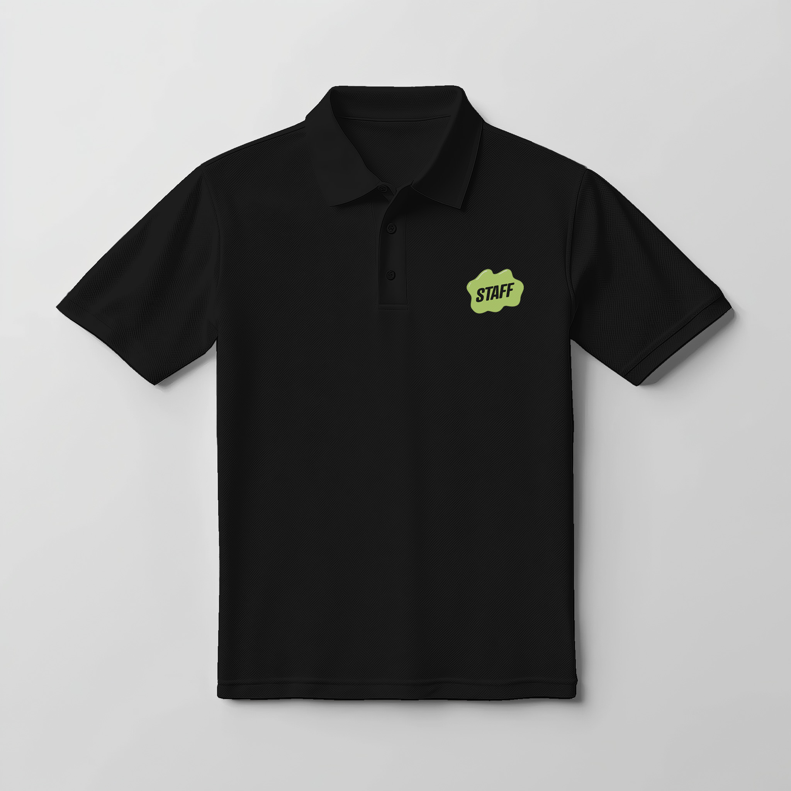

branding — 2026













디핑소스와 스프레드를 주제로 한 푸드 페스티벌 '딥앤(Dip&)' 브랜딩. 상업적이거나 전문성을 내세우는 행사가 아니라, 평소 구하기 어려운 다양한 소스를 한자리에 모아 누구나 가볍게 찍어 먹고 나누는 친근한 페스티벌을 지향한다. 손으로 집어 소스에 찍어 먹는 핑거푸드 문화의 격식 없고 공유적인 속성을 핵심 정서로 삼아, 소스의 묽은 질감을 활용한 타이포 엠블럼, 찍어 먹는 행위를 담은 손가락 그래픽, 맛별 컬러 패턴(간장·녹차·꿀·칠리소스)을 모듈 시스템으로 구축했다. 워드마크·시그니처·컬러 팔레트부터 입장 팔찌, 손가락 모양 테이스팅 스푼, 명찰, 티셔츠, 냅킨·종이컵, 배너까지 적용물 전반을 아우르는 아이덴티티 시스템.